Pembuatan MPI
Mengintegrasikan kecerdasan buatan (AI) untuk meracik media pembelajaran interaktif yang modern, menarik, dan sekelas dengan perangkat lunak profesional.
Eksplorasi MPI
Apa itu Media Pembelajaran Interaktif (MPI)?
Sistem penyampaian materi yang memadukan berbagai elemen multimedia dengan kontrol penuh dari pengguna. Siswa tidak lagi menjadi penonton pasif, melainkan penggerak utama dalam mengeksplorasi informasi.
Meningkatkan retensi memori secara drastis karena siswa memproses informasi melalui tindakan fisik (mengklik, menggeser) dan kognitif secara bersamaan.
Memungkinkan siswa mengatur ritme belajar mereka sendiri, mengevaluasi kesalahan secara langsung, dan mengeksplorasi konsep dengan aman.
4 Komponen Wajib MPI
Sebuah media baru dapat diklasifikasikan sebagai "interaktif" jika memiliki empat pilar utama yang menjembatani komunikasi dua arah antara sistem dan siswa.
Perpaduan terstruktur antara teks, grafis visual, animasi, dan audio yang menyajikan inti materi pelajaran.
Kehadiran tombol (Next/Prev), menu, atau *sidebar* yang memberi kebebasan navigasi tanpa paksaan linear.
Area penugasan tempat siswa bisa mengetik jawaban, melakukan *drag-and-drop*, atau menggeser variabel (slider).
Respon instan dari sistem atas input siswa (contoh: munculnya skor evaluasi, peringatan salah, atau efek visual).
Tingkatan Interaktivitas Pembelajaran
Tidak semua interaksi memiliki bobot kognitif yang sama. Sesuaikan level kerumitan media dengan tujuan pembelajaran (HOTS/LOTS).
Interaksi sebatas membalik halaman atau memulai video pembelajaran. Sangat linear.
Contoh: Modul PDF / PPTSiswa diberi pilihan jawaban, teka-teki, atau sistem pencocokan dengan *feedback* benar/salah secara instan.
Contoh: Quizizz / WordwallSiswa memegang kendali variabel. (Mengecilkan luas penampang pipa Bernoulli untuk melihat efek pada kecepatan fluida).
Contoh: Simulasi InteraktifPlatform Referensi Global & Nasional
Sebelum membuat karya web HTML mandiri, analisis pengalaman pengguna (UX) dari raksasa penyedia media edukasi interaktif berikut:
Media AI untuk MPI
AI: Asisten MPI Multiguna
AI Generatif (Gen-AI) memangkas waktu kerja guru dari berminggu-minggu menjadi hitungan jam. Kita membaginya menjadi 3 asisten khusus:
Memilih AI Programmer yang Tepat
Setiap AI memiliki spesialisasi dan "kecerdasan" unik dalam memahami bahasa pemrograman.
Rekomendasi Utama! Paling jenius dalam menyusun logika spasial (penempatan elemen di layar) berbasis HTML5 Canvas.
💬 ChatGPT (OpenAI)Sangat cerdas dalam memecahkan persamaan rumus fisika kompleks, namun UI web-nya terkadang lebih kaku.
✨ Google GeminiSangat cepat dan terintegrasi mulus jika Anda sering menggunakan ekosistem Google Workspace.
🎨 Canva (Magic Media)Bisa digunakan merancang desain MPI yang nanti *App Code*-nya disematkan (Embed).
AI Visual (Pembuat Aset Gambar)
Anda tidak perlu jago menggambar. Gunakan AI Gambar untuk membuat aset animasi, instrumen, atau elemen media lain agar aplikasi Anda tidak terlihat membosankan.
"Ilustrasi vektor 2D tabung erlenmeyer berisi cairan hijau, bergaya desain antarmuka modern (flat design), latar belakang warna putih bersih."
AI Audio (Pengisi Suara Profesional)
Gunakan teknologi *Text-to-Speech* seperti ElevenLabs atau Murf.ai untuk merekam narasi pembuka.
Kehadiran suara narator yang natural dan berintonasi (menyerupai guru sungguhan) terbukti meningkatkan daya fokus siswa hingga 40% dibandingkan modul yang sunyi senyap.
Coding via AI (HTML/JS)
Seni Meracik Kode Tanpa Mengetik
Fokuslah pada Alur Logika dan Rumus Fisika. Biarkan AI yang lelah menyusun sintaks bahasanya. Berikut 3 pilar penopang MPI HTML5:
Menyediakan tulang punggung aplikasi (Canvas, Slider *Input Range*, Label Teks, dan Tombol).
Merias web secara instan. Mengubah tombol kaku menjadi *rounded* dan mengatur tata letak grid layar.
Otak simulasi. Membaca interaksi *mouse/touch* dan menjalankan kalkulasi rumus fisika secara *real-time*.
Panduan UI/UX (Desain Layar)
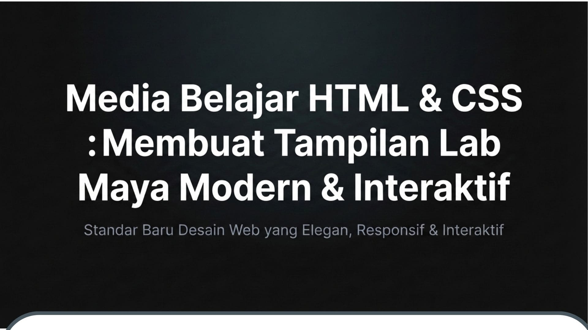
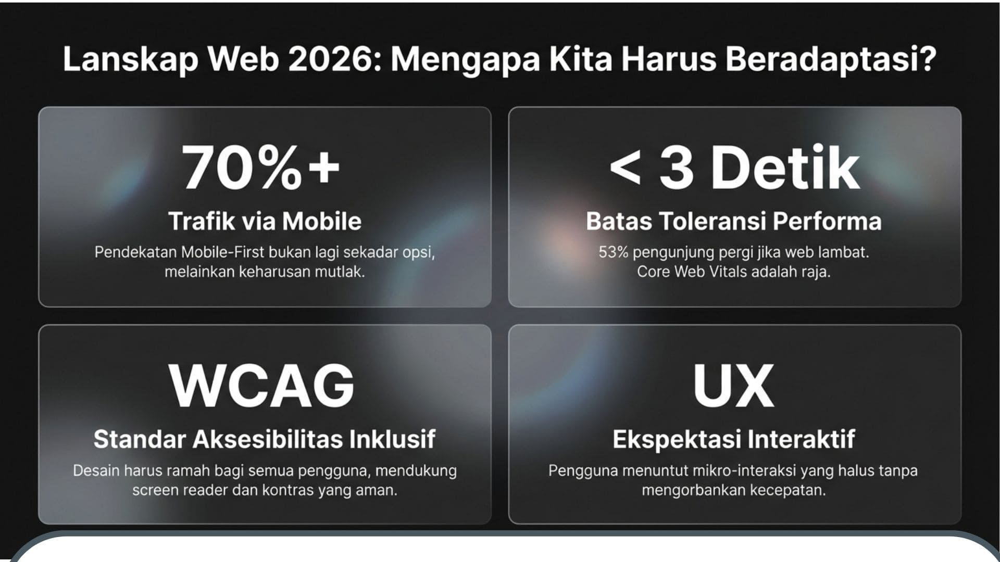
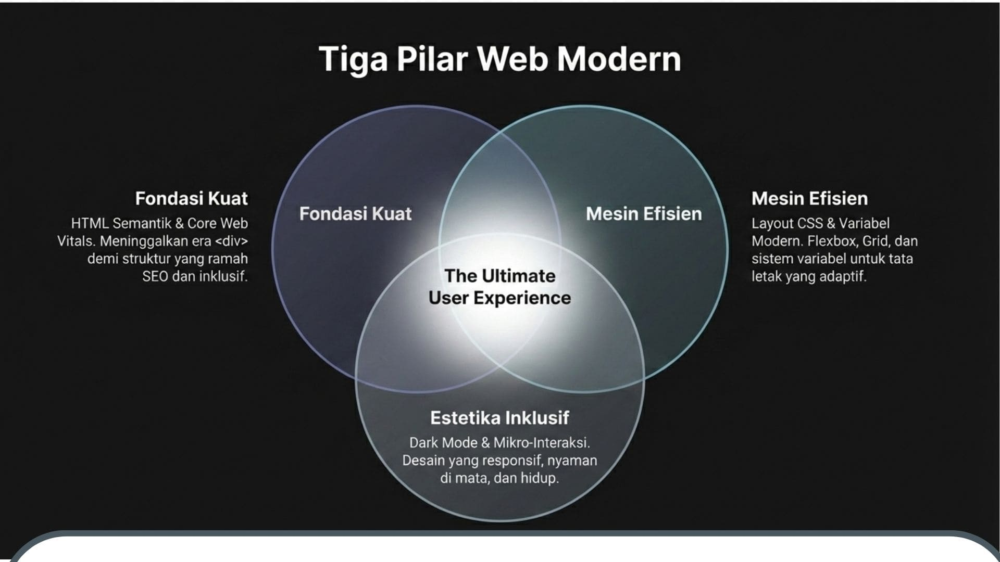
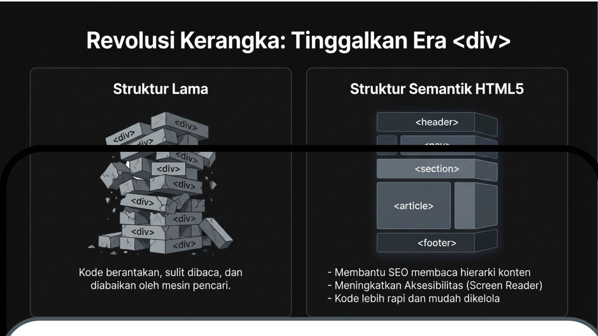
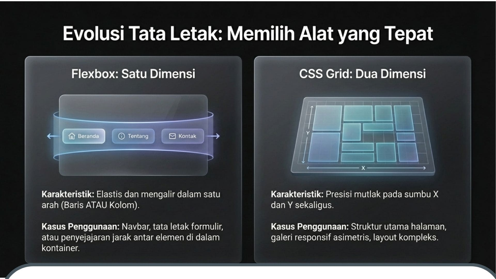
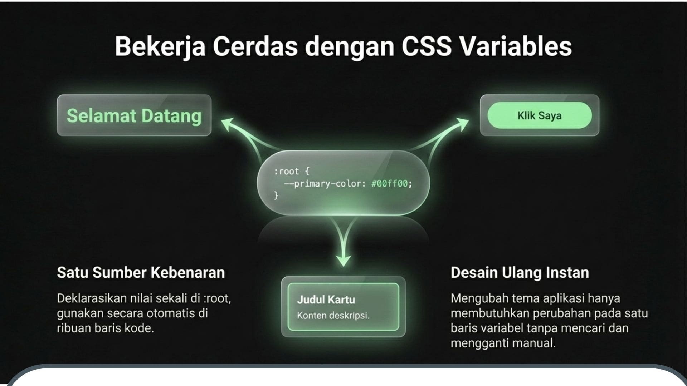
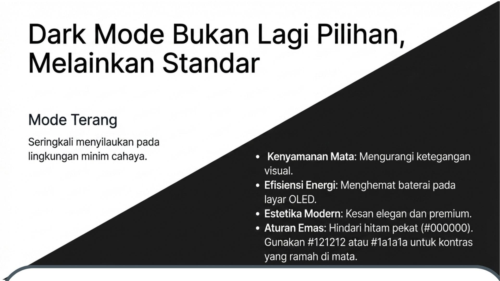
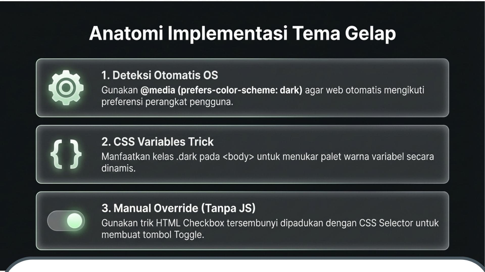
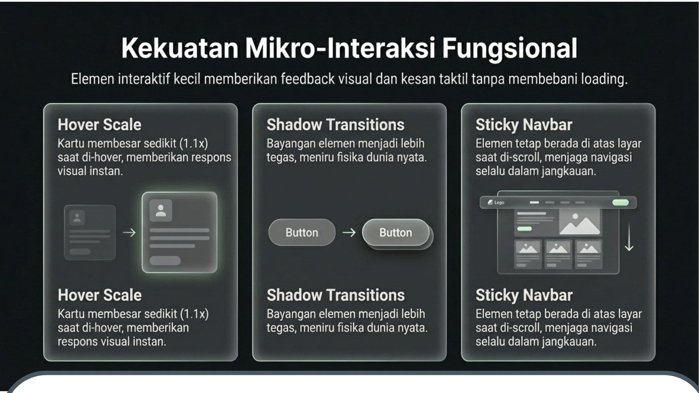
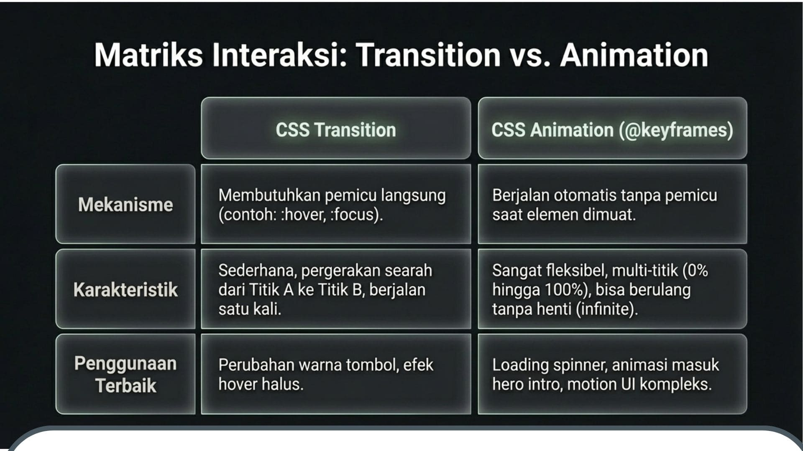
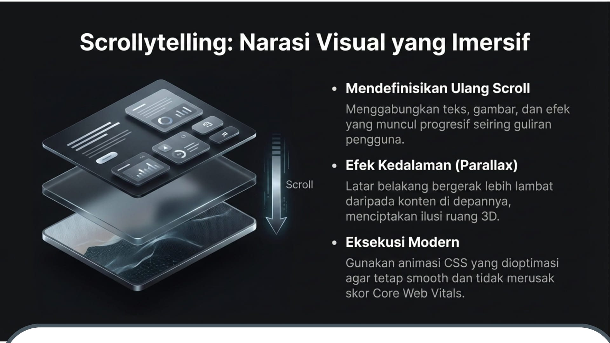
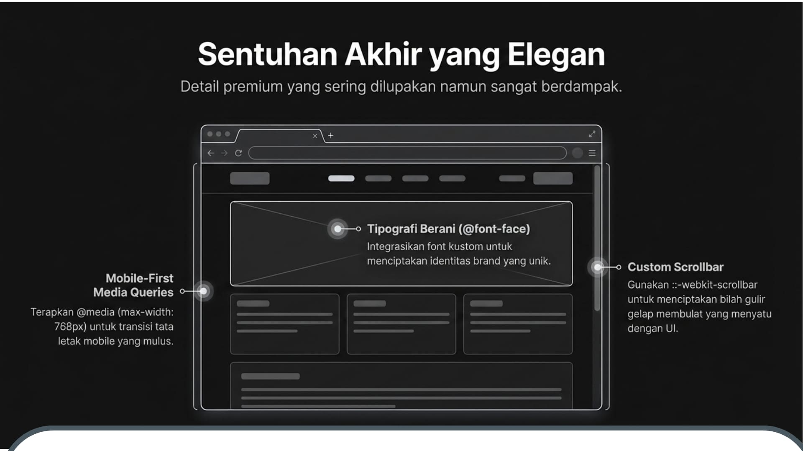
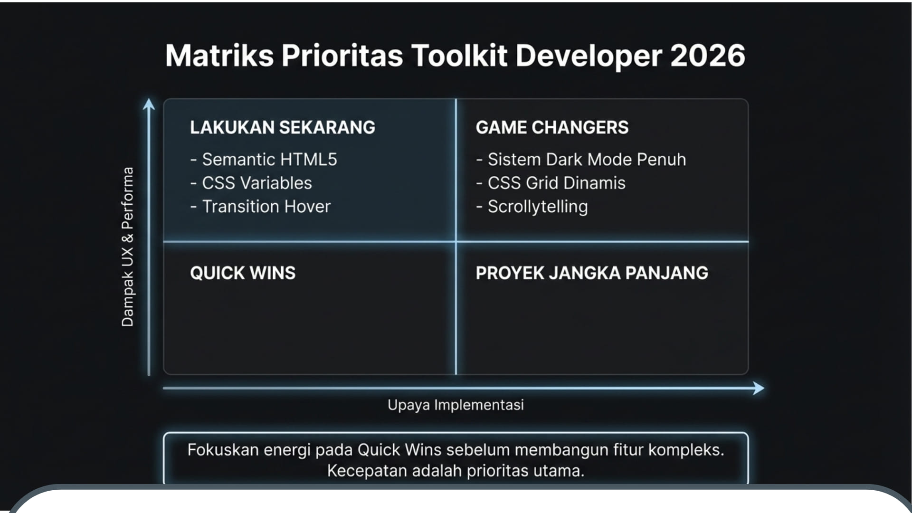
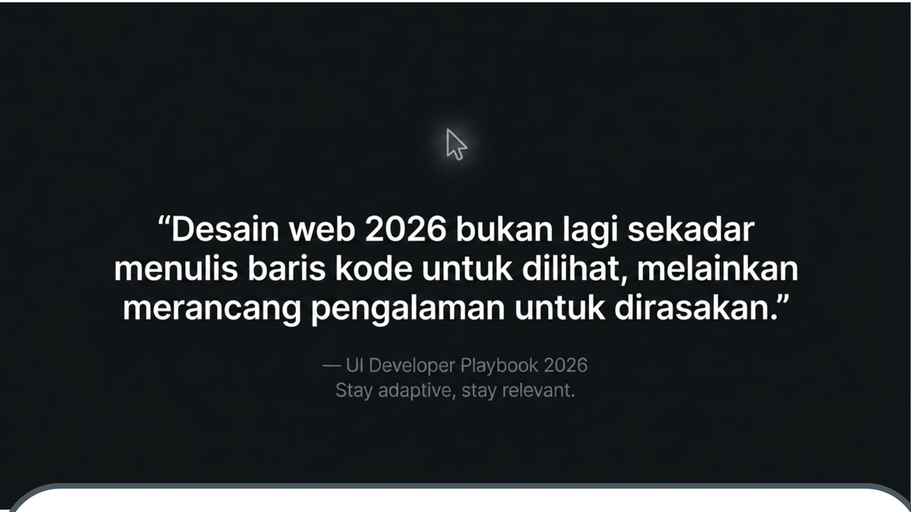
Formula Prompting (Metode RTDF)
AI butuh instruksi yang terkotak. Jangan merangkai paragraf novel, gunakan kerangka baku RTDF agar kode langsung jalan tanpa error.
"Bertindaklah sebagai Ahli Front-End Developer & Guru Fisika Senior."
"Buat simulasi interaktif tentang Hukum Viskositas Zat Cair."
"Gunakan Canvas, sediakan panel *slider* untuk merubah jenis cairan."
"Gabungkan semua sintaks (HTML, CSS, JS) di dalam 1 file `index.html` saja."
Membedah Anatomi Kode AI
Kenali letak 3 komponen utama di dalam file HTML agar Anda percaya diri merubah desain dan *tweak* angka secara mandiri:
Area *Library*. Jika desain tampilan berantakan atau polos, pastikan link <script src="tailwindcss"> diletakkan aman di dalam blok ini.
Area Visual. Cari tag <button> untuk menerjemahkan bahasa, atau rubah batas maksimal angka di atribut max="10" pada *slider*.
Area Logika. Temukan dan modifikasi variabel konstan (seperti g = 9.8 gravitasi bumi menjadi gravitasi bulan) di dalam bagian ini.
Studi Kasus Uji Coba
Mari praktikkan integrasi metode RTDF ke dalam satu instruksi yang solid untuk dikirimkan kepada Claude 4.6 atau ChatGPT.
"Buat simulasi Hukum Bernoulli (Pipa Venturi) di HTML Canvas dengan gaya Tailwind CSS yang modern. Tambahkan panel slider interaktif untuk mengatur Luas Penampang (A1 dan A2). Pastikan animasi fluida terlihat mengalir secara konstan merespon perubahan."
Standar Visual: Modul Profesional
Tanpa biaya *lisensi* mahal, HTML & CSS buatan AI mampu meniru keindahan dan tata letak UI/UX sekelas software e-learning profesional seperti Articulate Storyline.
- Navigasi linear terstruktur (*Tombol Next/Prev* jelas).
- Menu *sidebar* responsif untuk melacak indeks progres belajar.
- Fitur Pop-up (*lightbox layer*) berlapis saat menekan objek krusial.
- Sangat rapi dan intuitif bagi siswa yang terbiasa membaca E-Modul.
- Sangat cocok untuk simulasi praktikum yang menuntut SOP eksperimen berurutan (bertahap).
Standar Interaksi: Kelas Game Engine
Mengoptimalkan kapabilitas HTML5 <canvas>, AI dapat meracik MPI yang seru dan "terasa hidup", seakan-olah dibuat menggunakan Unity Engine.
- *Rendering* animasi mulus hingga 60 *Frame Per Second* (FPS).
- *Physics Engine* kuat (mampu meniru pantulan bola, gaya gesek, & gravitasi presisi).
- Panel pengatur (UI) bergaya *Heads-Up Display* (HUD) yang melayang transparan di atas kanvas.
- *Engagement* maksimal: Siswa masuk ke mode bermain, menghilangkan rasa bosan pada pelajaran yang sulit.
- Visualisasi dampak eksperimen terasa lebih instan (*real-time*).
Aplikasi Editor & Optimasi Layar
PID Friendly & Skalabilitas (Rasio 16:9)
Berikan parameter aspect-ratio: 16/9 pada kelas pembungkus aplikasi Anda. Hal ini vital agar simulasi tampil mengisi penuh layar Smartboard atau Proyektor di sekolah, bebas dari area *blank* atau pemotongan visual.
Optimasi Antarmuka Layar Sentuh (*Touch-Friendly*)
Ingat, siswa sering menggunakan tablet atau Smartboard langsung. Gunakan spesifikasi minimal area tekan (tombol/slider) sebesar 44x44 piksel. Hindari total *trigger* navigasi yang hanya aktif mengandalkan efek *hover* (sentuhan kursor mouse yang tidak ditekan).
Mengenal *Code Editor*
AI bukan tempat menyimpan file. Anda membutuhkan rumah (Editor) untuk merakit dan menyimpan mentahan kode AI tersebut menjadi file `.html` nyata.
- VS Code: Jika Anda menggunakan laptop *flagship* (Core i5/Ryzen 5 ++).
- Notepad++: Jika Anda menggunakan laptop sekolah keluaran lama.
- Online Editor: Pilihan saat di Aula tanpa menginstal apa pun.
Notepad (Bawaan OS Windows)
- Super ringan (0 MB memori).
- Tidak ada prosedur *Install*.
- Visual teks menyiksa mata (hanya teks hitam pekat).
- Sulit menemukan baris yang error (*No line numbers*).
Berfungsi mutlak sebagai *Plan B* saat komputer lab dikunci Admin IT. Ingat: Saat Save As, ubah *Save as type* menjadi All Files (*.*), lalu berikan eksistensi file manual index.html.
Visual Studio Code (VS Code)
- Syntax Highlighting canggih (warna berbeda per elemen).
- Punya auto-koreksi kesalahan ketik.
- Aplikasi rakus memori RAM laptop.
- Antarmuka (UI) menakutkan bagi guru non-IT.
Standard Wajib bagi *Developer* AI. Pasang ekstensi andalan bernama "Live Server". Dengan ini, Anda merubah ukuran tulisan, tekan Save (CTRL+S), dan Chrome Anda di sebelah kiri akan *update* secara magis tanpa perlu *refresh* F5!
Editor Virtual di *Browser*
(Contoh: html.onlineviewer.net, CodePen.io, JSFiddle)
- Halaman terbelah cantik (Kiri kode HTML, Kanan hasil instan).
- Zero *Install*. Cukup buka link.
- Lumpuh jika Wifi putus.
- Satu kali klik 'Silang' (X) pada tab tanpa sengaja = Karya lenyap selamanya.
Tempat paling cocok untuk "Ruang Eksekusi Sementara" di tengah diklat. Begitu AI kelar menulis, langsung tempel (*Paste*) di sini untuk mendeteksi *bug*. Bila lancar, pindahkan permanen ke File Desktop.
Notepad++ (Npp)
- Spesialis Laptop Kentang (*Installer* mungil 4.5 MB).
- Teks terwarna dan punya sistem angka baris.
- Visual *Toolbar* kembali ke era Windows 7.
- Hilangnya fitur mewah sinkronisasi *Live Preview*.
Kompromi paling cerdas antara keringanan Notepad biasa dan kepintaran identifikasi warna milik VS Code. Sangat diwajibkan untuk mengelola *file* MPI jika laptop guru sering *freeze*.
Skenario Mode *Offline* (*Zero-Quota*)
Trik jitu mendistribusikan karya MPI di sekolah area Blank-Spot (tanpa sinyal WiFi):
- Minta AI merangkum ketiga sistem (Struktur HTML, Hiasan CSS, Animasi JS) ke dalam tubuh satu file
index.htmltunggal (tanpa dipisah-pisah). - Larang AI menggunakan link "URL Gambar Eksternal". Unduh gambar aset, satukan di sebuah folder lokal baru (contoh nama:
asset). - Salin (*Copy*) *folder induk* Anda langsung ke Media Flashdisk.
- Pasangkan Flashdisk di komputer siswa, dan minta mereka "Klik Dua Kali" (Double-Click) file HTML tersebut. Browser akan merender simulasi secara mutlak lokal!
Publikasi Final
Definisi Hosting Web (Hosting Cloud)
Beralih dari mode *Offline*, *Hosting* adalah jembatan penghubung yang menyihir tumpukan file HTML terisolasi di dalam Laptop Anda menjadi sebuah portal situs interaktif berskala internasional (contoh tautan: fisika-roby.netlify.app).
4 Pilar *Hosting* Pendidikan Gratis Sepenuhnya Tanpa Kartu Kredit:
1. Vercel (Tercepat & Paling Instan)
- Lakukan registrasi cepat di vercel.com menggunakan metode sambung akun Gmail (Google).
- Buka beranda (Dashboard utama). Deteksi letak modul *uploader* bergambar kotak putus-putus (Biasanya ada teks "Drag & Drop").
- Buka File Explorer Laptop Anda. Temukan folder utama MPI (jangan pisahkan isinya). Klik dan tahan folder tersebut, gerakkan ke *browser*, dan Lepas (Drop) di atas zona putus-putus Vercel.
- Dalam 10 Detik, Server Vercel akan menganalisis kode HTML, mengolah, dan secara spektakuler menyerahkan *Link Domain* biru menyala yang siap dipakai.
2. Netlify (Kompetitor Klasik Vercel)
- Meluncurlah ke laman netlify.com. Ketuk Sign Up / Login. Pilih otentikasi praktis (Google).
- Lihat pada panel bilah kendali vertikal di sebelah Kiri, dan tekan menu spesifik bernama "Sites".
- Gulir roda mouse ke bagian kaki (*footer*) halaman. Ada sebuah zona abu-abu lebar berisi pesan "Want to deploy a new site? Drag and drop your site output folder here".
- Lakukan metode Seret & Lepas folder fisik MPI dari *Desktop* PC ke zona tersebut layaknya di Vercel.
- Selesai! Judul acak nan kocak (berwarna Hijau) akan tercipta. Klik judul itu untuk melihat Live Preview.
3. GitHub Pages (Standar *Programmer*)
- Tuju github.com. Pencet tombol hijau dominan bernama "New" untuk melahirkan ruang simpan (*Repository*) kosong.
- AWAS: Masukkan nama repositori secara mutlak mengikuti susunan ini:
nama-depan-anda.github.iolalu tekan konfirmasi Create Repository. - Ketuk hiperpautan biru kecil bertuliskan "uploading an existing file". Sekarang, alih-alih melempar foldernya, seretlah **isi** di dalamnya (file
index.htmlbeserta direktoriasset) ke sana. Tekan konfirmasi Commit Changes. - Masuk ke *Gear Icon* (Settings) di sudut kanan atas > Sorot sub-menu Pages (di bilah kiri bawah).
- Perhatikan bab *Build and deployment*. Di menu lungsur (*Dropdown*) yang tertulis `none`, paksa berubah menjadi
mainlalu tekan *Save*. - Dalam 3 Menit, situs MPI Anda resmi mengudara menantang dunia pada *link*
https://nama-depan-anda.github.io.
4. Google Sites (Favorit Para Pendidik)
- Kunjungi sites.google.com, buka bingkai situs *Blank* (Kosong).
- Temukan *Panel Element* (Kanan), klik logo Sematkan (< > Embed).
- Lompati tab URL, dan pilih tab sebelahnya yang berbunyi Sematkan Kode (Embed Code), muntahkan (*Paste*) tumpukan baris teks HTML MPI Anda.
asset/ lokal milik komputer Anda. Semua elemen visual (*Image/Icon*) di dalam tubuh koding HTML harus dikonversi mandiri menjadi Tautan URL Internet (Caranya: *Upload* manual gambar-gambar tersebut ke Imgur/Blogger/Drive Publik, lalu copy tautan raw-nya ke koding).
👉 REKOMENDASI TERGAMPANG: Lempar web tersebut ke Vercel (Lihat metode 1), copy *Link Live* Vercel-nya, dan cukup Sematkan (Embed) sebagai URL di Sites. Sangat elegan dan dijamin nihil *Error Gambar*.
Produksi Buku Manual (SOP Standar Keamanan Modul)
LKPD Fisik jangan hanya penuh dengan tulisan panjang. Anak generasi *Z-Alpha* butuh komando visual. Buatlah infografis panduan UI dari tangkapan layar (*Screenshot*) MPI Anda sendiri.
Suntikkan ornamen Panah Merah Menohok atau Lingkaran tebal pada dokumen *Print-Out* tersebut. Beri *Caption* telak: "Tarik kenop bundar biru ini perlahan ke kanan untuk memanaskan cairan", atau "Fokuskan mata pada sel *Speedometer* merah ini sesaat setelah peluru lepas!"
Fase *Quality Control* (Simulasi Kekebalan *Bug*)
Sebagai Penulis Utama perangkat MPI, wibawa guru adalah kelancaran aplikasi. Eksekusi Stress-Test Brutal sebelum URL menyebar di Whatsapp Grup Ketua Kelas!
- Geser panel *Slider Parameter* secara beringas (Maju Mundur secepat mungkin). Amati: Apakah kanvas *Crash*? Atau fisika masih mulus mengikuti angka?
- Tekan dan tabrak-tabrakan tombol berlawanan (*Play & Reset*) secara sporadis.
- Siksa *Layout Responsive* dengan melebarkan layar Laptop semaksimal mungkin, dan perketat dengan HP sistem potret (*Portrait* tegak). Web 16:9 yang hebat, akan mampu menyusut mengecil menuruti cangkang kaca HP tanpa ada objek yang meleset!
Jenis Konten di Ruang Murid
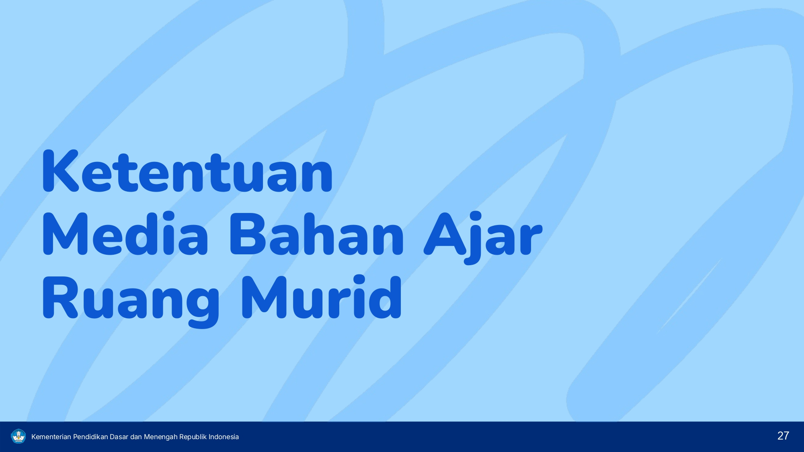
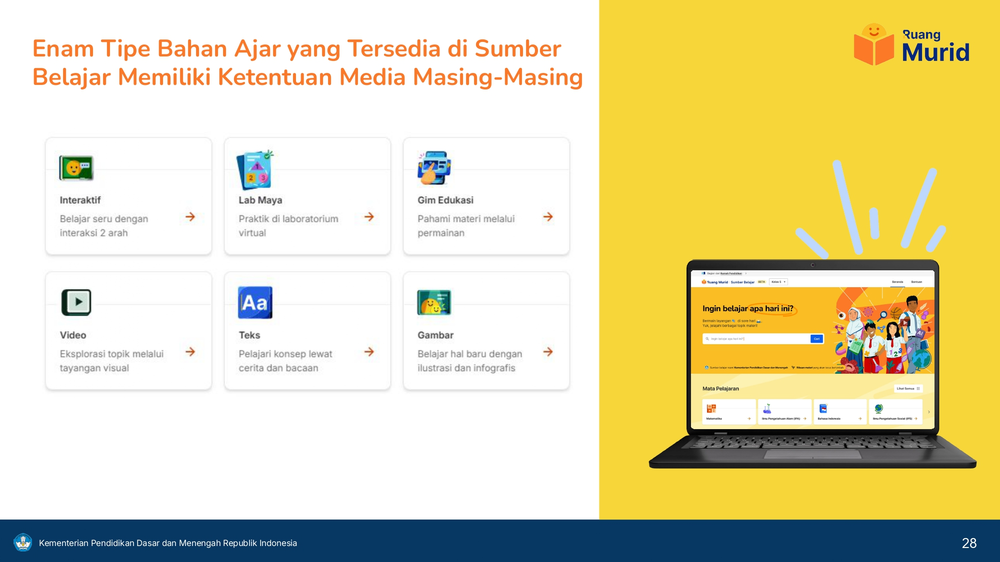
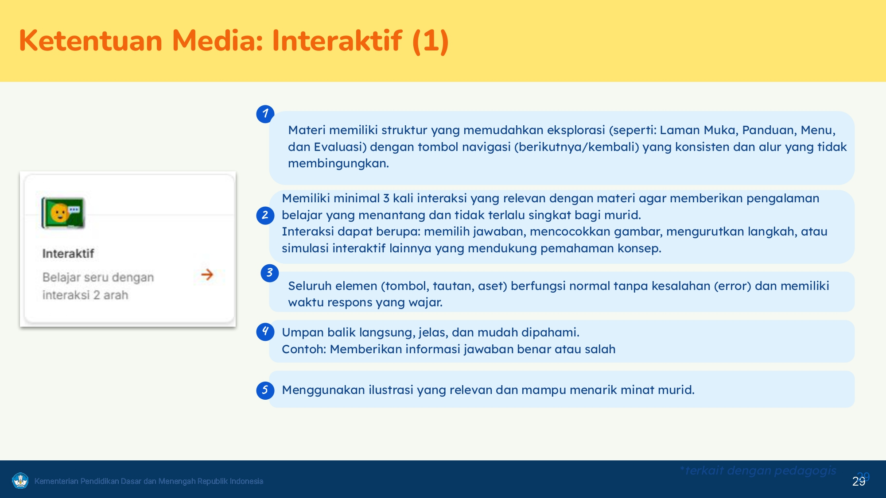
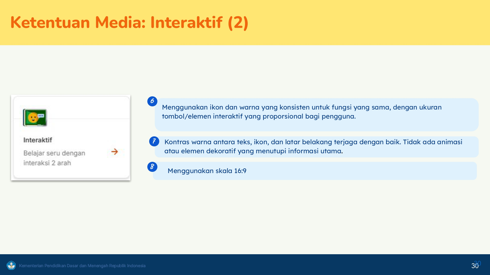
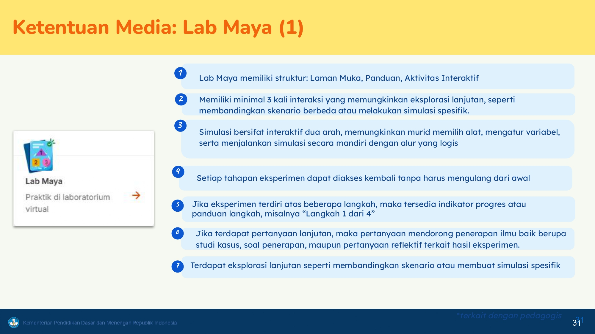
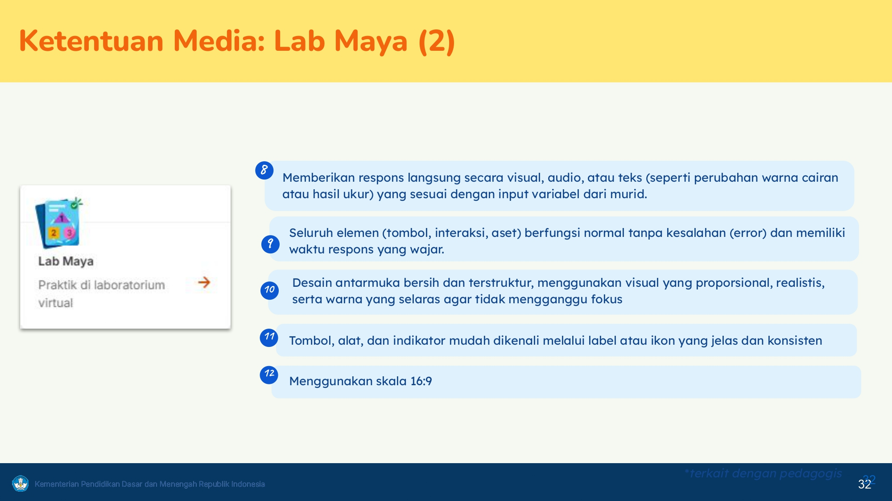
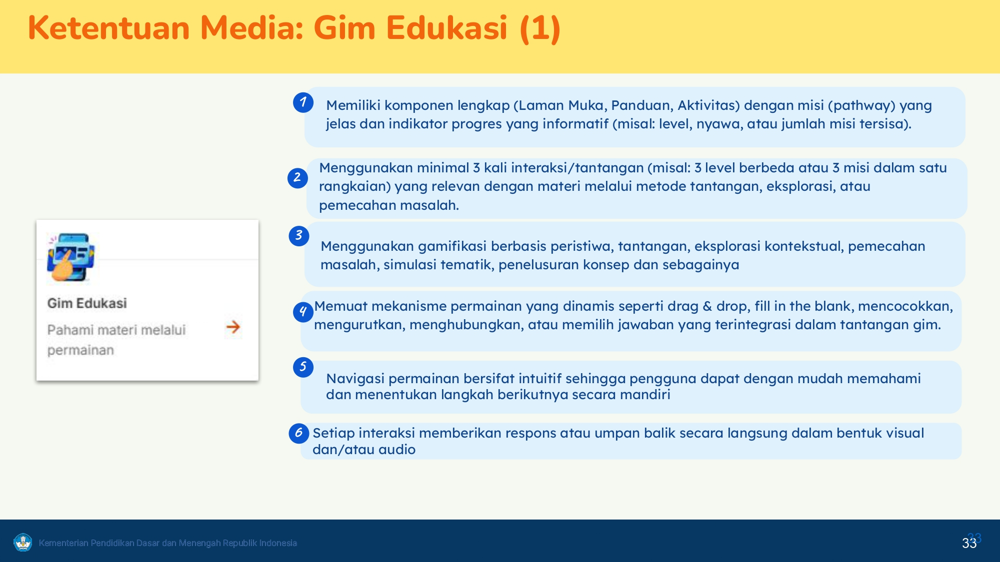
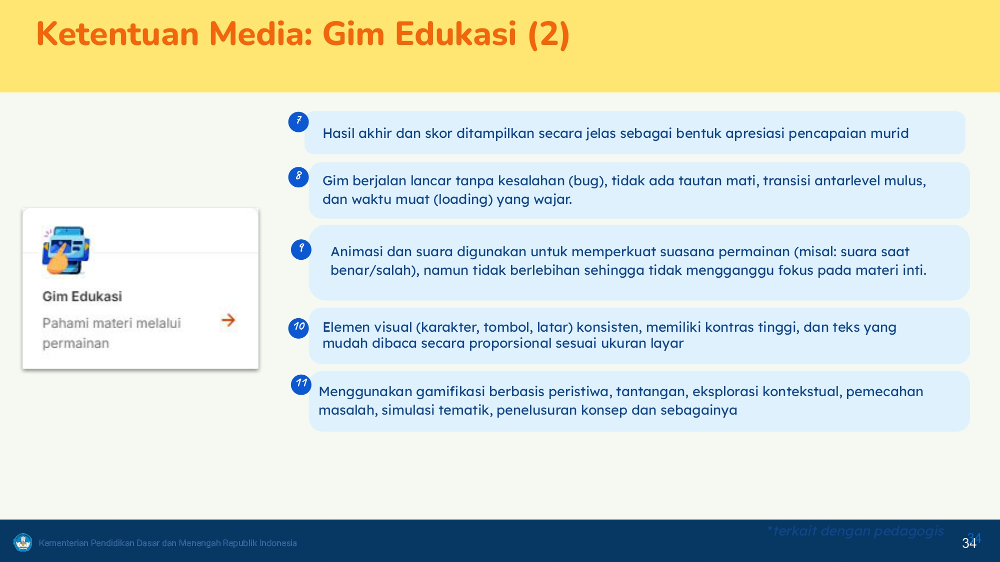
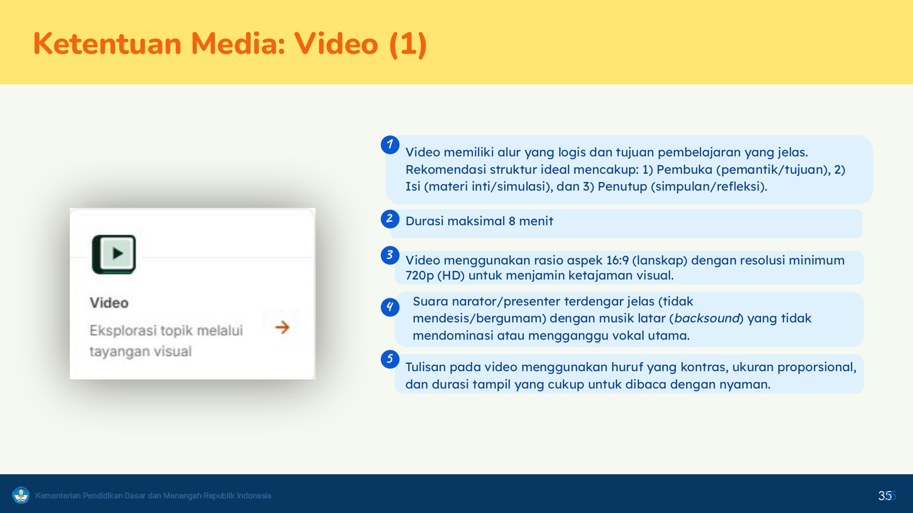
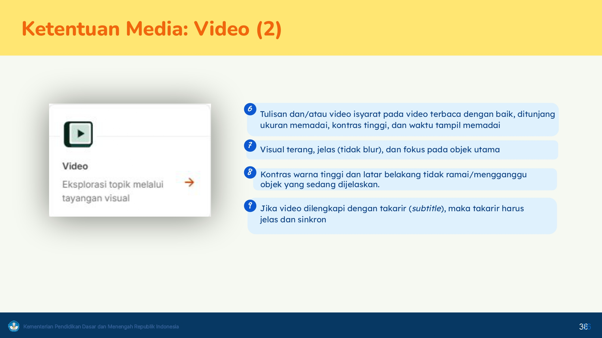
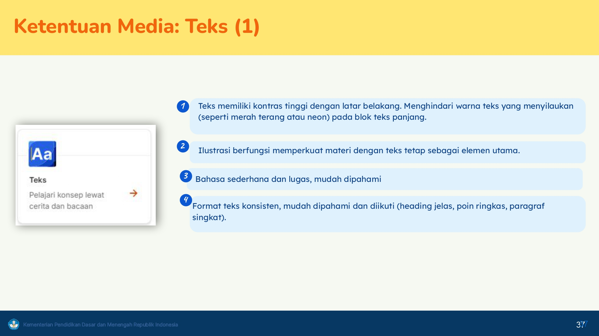
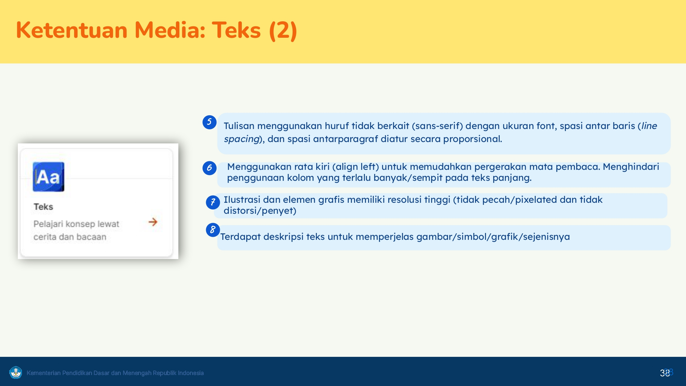
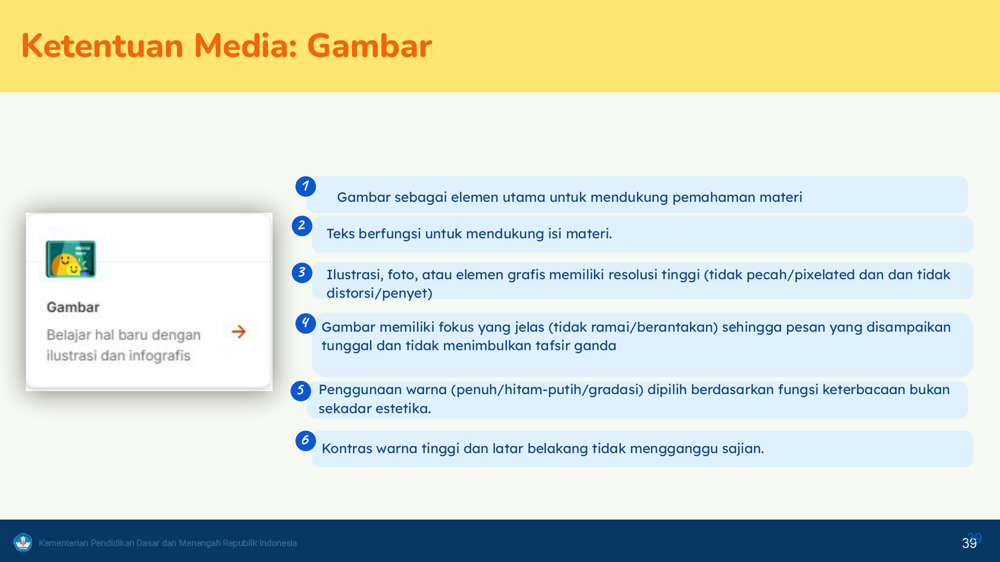
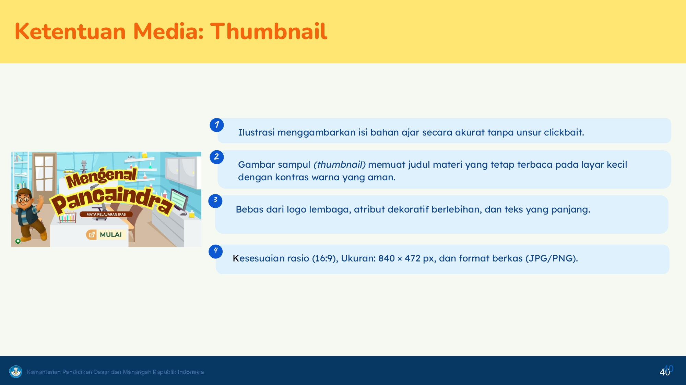